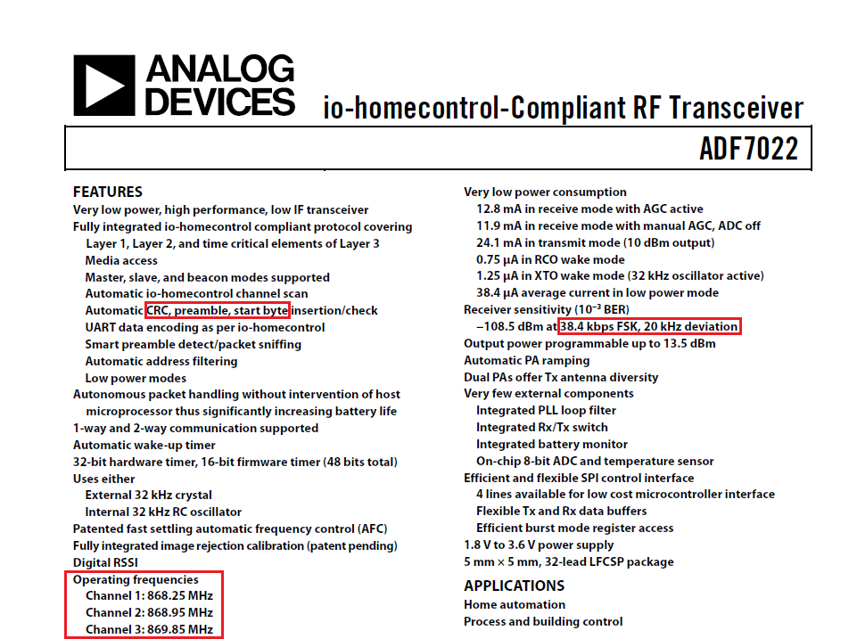

Information sources
Before you can receive any signals from your target system you'll need various important pieces of information.
Information you need to discover
- Carrier frequencies for transmission channels
- Transmission power
- Modulation scheme details
- Data rates and symbol rates
- Other considerations e.g. frequency hopping / spread spectrum etc.
- Data protocol information
Product data sheets
Data sheets can provide a wealth of useful information - below is an example of a datasheet for the transceiver chip within an io-homecontrol device: 
As can be seen in the example above, there are a number of very useful pieces of information:
Data protocol information - CRC, preamble, start byte
The number of channels and what their operating frequencies are:
- Channel 1: 868.25MHz
- Channel 2: 868.95MHz
- Channel 3: 869.85MHz
The data rate and modulation scheme - 38.4kbps FSK, 20 KHz deviation
FCC database
The Federal Communication Commission (FCC) is responsible for regulating RF transmissions in the US. Any piece of equipment that is sold in the US must submit their product for testing by the FCC to ensure it complies with the regulations and once it has been certified a report is added to their publicly searchable database. In addition to the technical specifications of the product, each report contains high resolution photographs of both the outside and inside, including all circuit boards.